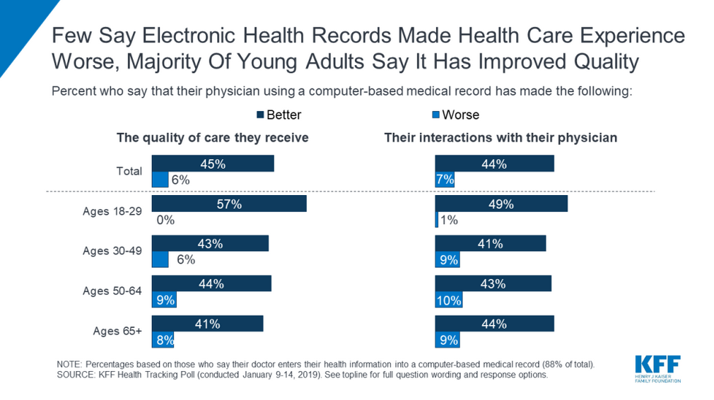

Electronic medical records, and their impact on efficiency and privacy.
Choices
Adopting such a complex system as an Electronic Medical Records database is a difficult feat. Integrating such a system into an intricate and crucial system as a medical provider is even more so. Is it only understandable then, that such a process would raise a number of choices, and decisions that must be made.
Product Choice
One such choice is in the product used. Implementers, such as hospitals or healthcare systems will need to choose what to implement. An "off-the-shelf" solution built by a software company would have the benefit of centralised development. Multiple customers using the same software would see the benefit of crowdsourced bug-discovery and feature design, improving reliability and stability. On the other hand, if a malicious attacker manages to compromise one hospital's system, then all hospitals and networks using the same system are at risk, even without being the intended target. (Basil et al., 2022) Comparatively, a hospital or system implementing a custom solution, designed by contractors or the existing I.T. department would see the benefit of perfect customisability. By being the sole user of the system, the medical organisation would have total control over feature development and bug-fixes. Implementers (hospitals, national healthcare systems, private networks) must decide what type of product to use for an electronic medical record system, and make the choice based on costs and a balanced risk assessment.
Security and Reliability
The matter of securing an electronic medical records system poses many choices. One such choice is the decision over whether to connect the system to the internet, or leave it on a local network. By connecting the system to the internet, the system can be expanded to allow patients to retrieve their own information, providing a layer of transparency and convenience that patients will appreciate. On the countering side, by not connecting the system to the internet, the security of the patients' data is increased. By restricting access to the system and database to those with access to the physical devices on the network, in a singular location, many types of attack are prevented. Remote attacks by malicious actors are prevented, merely by preventing exposure of the network to the wider internet. Security is crucial, as Papoutsi et al. (2015) found that patients expressed concerns over the security of the systems, expressing relucance to trust the systems with their sensitive information.
Another, related choice that medical providers need to make when implementing an electronic medical record system is how and where to deploy the system. A self-hosted, on-premises system would be more secure, allowing for total control over the data storage and server access. By keeping complete control over all aspects of the system, providers can be certain that they are meeting the compliance standards required by laws such as the United States' HIPAA, or New Zealand's HIPC. Alternatively, providers could choose to host their electronic medical record systems in the cloud, with providers such as AWS or Microsoft Azure. These would provide the technical capabilities of simpler scalability, and support, with guaranteed uptimes and maintenance. Such cloud providers are capable of meeting the national privacy compliance standards, but lack the transparency that some providers may be more comfortable with.
Necessity and Value
For providers such as hospitals, or national healthcare networks, the question of necessity is often brought up. Implementing an electronic medical record system can be expensive. These providers are often already working on stretched budgets, as demonstrated by recent healthcare worker strikes (Hill, 2025),[^6] and these budgets often would be better served by focussing on other aspects of the system than implementing a digital database revolution. Traditionalists will argue that paper-based records have worked for hundreds of years, and will work for hundreds of years more. Progressivists will argue, contrarily, that technology has made everything easier, and should be allowed to continue to make things easier. Studies conducted, such as one from Woods et al. (2013), would suggest that electronic medical records have improved patient morale and outcomes. They noted that, electronic medical records, when used in a system providing a portal for patients to access their medical records, positively impacted patients. "Patients felt that seeing their records positively affected communication [...], enhanced knowledge of their health and improved self-care, and allowed for greater participation in the quality of their care [...]", (Woods et al., 2013). By providing patients a frequently updating, active insight into their medical care, patients were able to stay connected to their health, and felt in-control of their life. Greater transparency in the medical system wasn't without its problems for patients, however. Some patients reported "[...] seeing previously undisclosed information, derogatory language, or inconsistencies in their notes [which] caused challenges" (Woods et al., 2013).. Overall, a healthcare provider's goal should be better patient care, and the introduction of electronic medical records is a publicly notable way to do so. Hospitals, especially publicly owned ones, benefit from positive publicity. A visible and noticeable chance such as this, would bring goodwill from the media. Provided it goes smoothly, that is./p>
Patient Consent
An important choice that must be made, but is less often considered, is the choice made by patients as to whether their data is to be stored in an electronic medical record. A key aspect of good healthcare is ensuring patients are able to make informed decisions about their care. One such informed decision that often goes overlooked is if they wish to store their data digitally. While the benefits of electronic medical records are numerous, there are downsides that must be considered.
Kirzinger, A., Muñana, C., & Brodie, M. (2019) notes that, in a 2019 survey conducted among 1,190 adults from the United States, some were not happy with the digitisation. The data showed that 6% of respondents said that the introduction of electronic health records had made their care worse, while 7% said that interactions with their physician were also worse. While the percentage is low, the disproportionate skew towards older generations is notable. Fewer than 2% of those surveyed between ages 18 and 29 were unhappy with their care or interactions, while the number reached 10% in those aged between 50 and 64. Older patients, who may end up seeing a practitioner more frequently, are a key demographic, and something as crucial as medical care is not something that can be a 9 in 10 success rate. Patients need to be given the opportunity for something better.

Patients should be given the choice. While some patients may be privacy conscious, and worried about their data leaking or being lost, some may be part of the 10% of aged patients, unhappy with their interactions and care. It is crucial to break down barriers to medical care, not to increase them.
Such choices have been made, and will continue to be made, as electronic medical records are implemented globally. A well-designed and well-secured electronic medical record system can be a boon to a medical system, while a poorly implemented system could delay important treatment, and endanger lives. Many choices need to be made along this process, each with their own risks and opportunities.